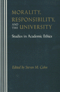

|
|
American
Communism and Black Americans
A Documentary History, 1930-1934, Volume 2
Foner, Philip S., and Herbert Shapiro, eds.
Examines the final text of the "Resolution on the Negro Question"
416 pp • Fall 1990
cloth 0-87722-761-6
EAN 978-0-87722-761-8
|
| 
|
Beyond
the City Limits
Urban Policy and Economics Restructuring in Comparative Perspective
Logan, John R., and Todd Swanstrom
Challenging the notion that there is a single, global process of
economic restructuring to which cities must submit
288 pp • Fall 1990
paper 0-87722-944-9
EAN 978-0-87722-944-5
cloth 0-87722-733-0
EAN 978-0-87722-733-5
|
|
|
Catalog
of the Charles L. Blockson Afro-American Collection of the Temple
Univesity Libraries
Wesley, Dorothy Porter, and Charles L. Blockson
The largest collection of items relating to the African Diaspora
experience collected at Temple University
820 pp • Fall 1990
cloth 0-87722-749-7
EAN 978-0-87722-749-6
|
|
|
Catholic
Social Teaching and Economic Theory
Paradigms in Conflict
Hobgood, Mary E., and Larry L. Rasmussen
Analyzes the official Catholic School Teaching from the perspective
of the secular, economic, and political sciences
256 pp • Fall 1990
cloth 0-87722-754-3
EAN 978-0-87722-754-0
|
| 
|
Customizing
the Body
The Art and Culture of Tattooing
Sanders, Clinton R.
Describes the seven-year involvement of a sociologist in the world
of tattoo culture
New in Paperback!
240 pp • 5.5x8.2 • Fall 1988
paper 0-87722-764-0
EAN 978-0-87722-764-9
|
| 
|
Descent
into Discourse
The Reification of Language and the Writing of Social History
Palmer, Bryan D.
Arguing that the current reliance on poststructuralism obscures
the origins, meanings, and consequences of historical events and
processes
New in Paperback!
312 pp • Spring 1990
paper 0-87722-720-9
EAN 978-0-87722-720-5
|
|
|
Detroit
Race and Uneven Development
Darden, Joe T., Richard Child Hill, June Thomas, and Richard Thomas
Examining the genesis of modern Detroit as a hub of wealth and
poverty
New in Paperback!
336 pp • Fall 1987
paper 0-87722-776-4
EAN 978-0-87722-776-2
|
|
|
Diet
and Domestic Life in Society
Sharman, Anne, Janet Theophano, Karen Curtis, and Ellen Messer, eds.
A collection of case studies reports on dietary practices in a
variety of cultures
288 pp • Fall 1990
cloth 0-87722-751-9
EAN 978-0-87722-751-9
|
|
|
Do
Not Neglect Hospitality
The Catholic Worker and the Homeless
Murray, Harry
Traces the notion of hospitality in various societies throughout
history, in myth, and in Christian tradition
304 pp • Fall 1990
cloth 0-87722-726-8
EAN 978-0-87722-726-7
|
|
|
Environmental
Accidents
Personal Injury and Public Responsibiltiy
Gaskins, Richard H.
Indicts the U.S. legal system for perpetuating the belief that
accidents are only legal disputes between individuals
New in Paperback!
440 pp • Spring 1989
paper 0-87722-708-X
EAN 978-0-87722-708-3
|
| 
|
Facing
The Death Penalty
Essays on a Cruel and Unusual Punishment
Radelet, Michael L., and Henry Schwarzschild, eds.
An in-depth examination of what life under a sentence of death
is like
New in Paperback!
264 pp • Spring 1989
paper 0-87722-721-7
EAN 978-0-87722-721-2
|
| 
|
Fred
Allen's Radio Comedy
Havig, Alan
Tracing a career that lasted from 1912 into the 1950s, Havig describes
the "verbal slapstick" style that was Fred Allen's hallmark
and legacy to American comedy
296 pp • Fall 1990
cloth 0-87722-713-6
EAN 978-0-87722-713-7
|
|
|
Free
Women
Ethics and Aesthetics in Twentieth-Century Women's Fiction
Fullbrook, Kate
The ethical and aesthetic impulses that have shaped the fiction
of prominent authors
192 pp • Fall 1990
paper 0-87722-774-8
EAN 978-0-87722-774-8
cloth 0-87722-773-X
EAN 978-0-87722-773-1
|
|
|
Freedom
Without Responsibility
Waller, Bruce N.
A fresh perspective on the controversial set of questions surrounding
determinism, naturalism, freedom, and responsibility
256 pp • Fall 1990
cloth 0-87722-717-9
EAN 978-0-87722-717-5
|
| 
|
From
Warism to Pacifism
A Moral Continuum
Cady, Duane L.
Exposes the pervasive, subconscious warism that is the dominant
ideology in modern Western culture
New in Paperback!
174 pp • Spring 1989
paper 0-87722-779-9
EAN 978-0-87722-779-3
|
|
|
Girls
Only?
Gender and Popular Children’s Fiction in Britain, 1880-1910
Reynolds, Kimberly
Explores the relationship between notions of gender difference
and social practice
208 pp • Fall 1990
cloth 0-87722-737-3
EAN 978-0-87722-737-3
|
 |
How
Holocausts Happen
The United States in Central America
Porpora, Douglas V.
A powerful indictment of U.S. intervention in Central America
232 pp • Fall 1990
cloth 0-87722-750-0
EAN 978-0-87722-750-2
|
|
|
Human
Rights in a Changing World
Cassese, Antonio
Examines the nature and role of human rights in the context of
international relations in the modern world
200 pp • Fall 1990
cloth 0-87722-746-2
EAN 978-0-87722-746-5
|
|
|
Impure
Thoughts
Essays on Philosophy, Feminism, and Ethics
Addelson, Kathryn Pyne
Insightful explorations of moral limits to human interactions
257 pp • 5.5x8.25 • Fall 1990
cloth 0-87722-753-5
EAN 978-0-87722-753-3
|
| 
|
Jews
Against Zionism
The American Council for Judaism, 1942-1948
Kolsky, Thomas A.
The first full-scale history of the only organized American Jewish
opposition to Zionism during the 1940s
288 pp • 6x9 • Fall 1990
paper 1-56639-009-5
EAN 978-1-56639-009-5
cloth 0-87722-694-6
EAN 978-0-87722-694-9
|
| 
|
Job
Queues, Gender Queues
Explaining Women’s Inroads into Male Occupations
Reskin, Barbara F., and Patricia A. Roos
A controversial interpretation of women's dramatic inroads into
several male occupations
388 pp • 6x9 • Fall 1990
paper 0-87722-744-6
EAN 978-0-87722-744-1
cloth 0-87722-743-8
EAN 978-0-87722-743-4
|
| 
|
Job
Training For Women
The Promise and Limits of Public Policies
Harlan, Sharon L., and Ronnie J. Steinberg, eds.
A comprehensive review of the public system of occupational education
and job training for women in the U.S.
New in Paperback!
572 pp • Spring 1989
paper 0-87722-762-4
EAN 978-0-87722-762-5
|
|
|
Journey
to a Far Place
Autobiographical Reflections
Quinney, Richard
Charts a quest for intellectual and personal meaning
152 pp • 8x10 • Fall 1990
cloth 0-87722-725-X
EAN 978-0-87722-725-0
|
|
|
Labor
at the Ballot Box
The Massachusetts Prevailing Wage Campaign of 1988
Erlich,
Mark
Intriguing case study of the roadblocks for unions in building
political consensus
232 pp • Fall 1990
cloth 0-87722-727-6
EAN 978-0-87722-727-4
|
|
|
Liberation
Struggles in International Law
Quaye, Christopher O.
An investigation of self-determination, secession, rebellion, the
use of force, and terrorism in national liberation movements
358 pp • Fall 1990
cloth 0-87722-712-8
EAN 978-0-87722-712-0
|
| 
|
Living
Morally
A Psychology of Moral Character
Thomas, Laurence
What constitutes a moral life? How does one acquire and maintain
a good moral character?
New in Paperback!
278 pp • Spring 1998
paper 0-87722-778-0
EAN 978-0-87722-778-6
|
|
|
The
Manhattan Project
A Documentary Introduction to the Atomic Age
Stoff, Michael B., ed.
A history of the development of the atomic bomb and its use in
World War II
320 pp • Fall 1990
paper 0-87722-787-X
EAN 978-0-87722-787-8
cloth 0-87722-878-7
EAN 978-0-87722-878-3
|
|
|
Mary
Heaton Vorse
The Life of an American Insurgent
Garrison, Dee
A chronology of American radicalism through the life of the foremost
pioneer of labor journalism in the U.S.
New in Paperback!
400 pp • Spring 1989
paper 0-87722-781-0
EAN 978-0-87722-781-6
|
| 
|
A
Moral Military
Axinn, Sydney
A book on the scope and limits of moral military activity
New in Paperback!
230 pp • 6x9 • Spring 1989
paper 0-87722-780-2
EAN 978-0-87722-780-9
|
|
|
Morality
and Human Nature
A New Route to Ethical Theory
McShea, Robert J.
A controversial inquiry into the origins of human values
240 pp • Fall 1990
cloth 0-87722-735-7
EAN 978-0-87722-735-9
|
| 
|
Morality,
Responsibility, and the University
Studies in Academic Ethics
Cahn, Steven M, ed.
Critically investigating crucial moral issues generated by academic
life
288 pp • Fall 1990
paper 0-87722-959-7
EAN 978-0-87722-959-9
cloth 0-87722-646-6
EAN 978-0-87722-646-8
|
|
|
Morte
d'Author
An Autopsy
Hix, H. L.
A fundamental error of the "death of the author" debate
brought to light
224 pp • Fall 1990
cloth 0-87722-734-9
EAN 978-0-87722-734-2
|
|
|
The
Music of Our Lives
Higgins, Kathleen Marie
Music as "a means of exploring the wealth of our ethical world"
288 pp • Fall 1990
cloth 0-87722-756-X
EAN 978-0-87722-756-4
|
|
|
Negotiated
Care
The Experience of Family Day Care Providers
Nelson, Margaret K.
Explores the daily lives of family day care providers
400 pp • Fall 1990
cloth 0-87722-728-4
EAN 978-0-87722-728-1
|
| 
|
The
New American History
Foner, Eric
Leading historians define key trends in the field of history and
reflect on how the experience of previously neglected groups has
fundamentally redefined U.S. history
400 pp • 6x9 • Spring 1990
paper 0-87722-699-7
EAN 978-0-87722-699-4
cloth 0-87722-698-9
EAN 978-0-87722-698-7
|
| 
|
New
Homeless and Old
Community and the Skid Row Hotel
Hoch, Charles, and Robert A. Slayton
The answers to one of the most pressing problems of our time come
from the poor themselves
New in Paperback!
312 pp • Spring 1989
paper 0-87722-765-9
EAN 978-0-87722-765-6
|
|
|
New
Soviet Thinking and U.S. Nuclear Policy
Myers, David B.
An examination of nuclear weapons policy options in light of recently
declared changes in Soviet military strategy
304 pp • Fall 1990
cloth 0-87722-710-1
EAN 978-0-87722-710-6
|
|
|
Parental
Leave and Child Care
Setting a Research and Policy Agenda
Hyde, Janet Shibley, and Marilyn J. Essex, eds.
An essential resource for those currently considering laws to establish
parental leave and legislation on child care provision
448 pp • Fall 1990
cloth 0-87722-732-2
EAN 978-0-87722-732-8
|
| 
|
Policing
as Though People Matter
Guyot, Dorothy
What makes a good police department?
448 pp • Fall 1990
cloth 0-87722-755-1
EAN 978-0-87722-755-7
|
|
|
Property
and the Politics of Entitlement
Brigham, John
A case for constitutional protection of entitlements as property
240 pp • Fall 1990
cloth 0-87722-715-2
EAN 978-0-87722-715-1
|
|
|
Radical
Sociologists and the Movement
Experiences, Lessons, and Legacies
Oppenheimer, Martin, Martin J. Murray, and Rhonda F. Levine, eds.
Autobiographical essays by individuals whose radicalism developed
in and around the discipline of sociology
256 pp • Fall 1990
cloth 0-87722-745-4
EAN 978-0-87722-745-8
|
|
|
Resisting
Images
Essays on Cinema and History
Sklar, Robert, and Charles Musser, eds.
Essays that raise questions about film history, historiography,
and cultural theory
320 pp • Fall 1990
paper 0-87722-738-1
EAN 978-0-87722-738-0
cloth 0-87722-731-4
EAN 978-0-87722-731-1
|
| 
|
Rethinking
College Athletics
Andre, Judith, and David N. James, eds.
Why do colleges have intercollegiate athletics? Why should colleges
keep them? An examination of the values that are intrinsic to sport
257 pp • 6x9 • Fall 1990
cloth 0-87722-716-0
EAN 978-0-87722-716-8
|
|
|
Retribution
Evil for Evil in Ethics, Law, and Literature
Henberg, Marvin
Argues that the persistence of retribution is best understood from
a perspective of evolutionary naturalism
288 pp • Fall 1990
cloth 0-87722-724-1
EAN 978-0-87722-724-3
|
| 
|
The
Roots of Thinking
Sheets-Johnstone, Maxine
A ground-breaking interdisciplinary study about conceptual origins
linking hominid thinking with hominid evolution
408 pp • Fall 1990
cloth 0-87722-711-X
EAN 978-0-87722-711-3
|
|
|
Running
for Freedom
Civil Rights and Black Politics in White America, 1941-1988
Lawson, Steven F.
A history of the black civil rights movement in the United States
320 pp • Fall 1990
cloth 0-87722-792-6
EAN 978-0-87722-792-2
|
|
|
Schopenhauer
The Human Character
Atwell, John E.
An insightful analysis of Schopenhauer's "will-body identity thesis"
that leads to the conclusion that the "vocation of man" is to go
beyond man, and thus beyond the body and the very world to which
the body belongs
259 pp • 5x8 • Fall 1990
cloth 0-87722-748-9
EAN 978-0-87722-748-9
|
|
|
The
Thee Generation
Reflections on the Coming Revolution
Regan, Tom
Arguing that the expansive ethic of service is replacing the suffocating
ethic of greed
176 pp • Fall 1990
cloth 0-87722-758-6
EAN 978-0-87722-758-8
|
|
|
Time
and Experience
McInerney, Peter K.
An analysis of the philosophy of time
224 pp • Fall 1990
cloth 0-87722-752-7
EAN 978-0-87722-752-6
|
|
|
Time
and Social Theory
Adam, Barbara
Exposing classical frameworks of thought as inadequate to the task
of conceptualizing our contemporary world
250 pp • Fall 1990
cloth 0-87722-788-8
EAN 978-0-87722-788-5
|
|
|
Upstream/Downstream
Issues in Environmental Ethics
Scherer, Donald, ed.
Philosophy applied to environmental issues
288 pp • Fall 1990
cloth 0-87722-747-0
EAN 978-0-87722-747-2
|
| 
|
Washington,
D.C.
Inner-City Revitalization and Minority Suburbanization
Gale, Dennis E.
Using public education as a gauge to measure racial and ethnic
change in urban areas
New in Paperback!
259 pp • Fall 1987
paper 0-87722-777-2
EAN 978-0-87722-777-9
|
| 
|
We
Make the Road by Walking
Conversations on Education and Social Change
Horton, Myles, Paulo Freire, Brenda Bell, John Gaventa, and John Peters
Two pioneers of education discuss their diverse experiences and
ideas
296 pp • 5.5x8.25 • Fall 1990
cloth 0-87722-771-3
EAN 978-0-87722-771-7
|
| 
|
Women
and Stepfamilies
Voices of Anger and Love
Maglin, Nan Bauer, and Nancy Schniedewind, eds.
Describes the unique and varied experiences of women in stepfamilies
as told by the women themselves
New in Paperback!
448 pp • Fall 1988
paper 0-87722-782-9
EAN 978-0-87722-782-3
|
|
|
Women,
Islam and the State
Kandiyoti, Deniz, ed.
Examines the relationship between Islam, the nature of state projects,
and the position of women in the modern nation states of the Middle
East and South Asia
256 pp • Fall 1990
paper 0-87722-786-1
EAN 978-0-87722-786-1
cloth 0-87722-785-3
EAN 978-0-87722-785-4
|